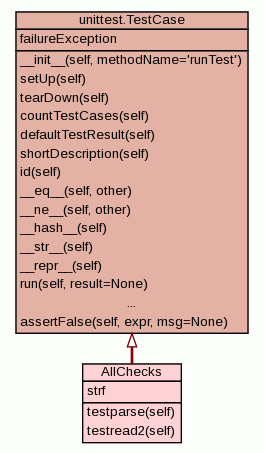

Trees
Indices
Help
relax
Package bmrblib
::
Package pystarlib
::
Module FileTest
:: Class AllChecks
[
hide private
]
[
frames
] |
no frames
]
Class AllChecks
source code

Instance Methods
[
hide private
]
testparse
(
self
)
STAR parse
source code
testread2
(
self
)
STAR File read
source code
Class Variables
[
hide private
]
strf
=
File(verbosity= 2)
Trees
Indices
Help
relax
Generated by Epydoc 3.0.1 on Fri Feb 1 21:33:47 2013
http://epydoc.sourceforge.net